MY FIRST NOVEL.
THE TRAIL OF THE SERPENT.
BY MISS M. E. BRADDON.
ILLUSTRATIONS BY MISS F. L. FULLER.
My first novel! Far back in the distinctness of childish memories I see a little girl who has lately learnt to write, who has lately been given a beautiful brand new mahogany desk, with a red velvet slope, and a glass ink bottle, such a desk as might now be bought for three and sixpence, but which in the forties cost at least half-a-guinea. Very proud is the little girl, with the Kenwigs pigtails, and the Kenwigs frills, of that mahogany desk, and its infinite capacities for literary labour, above all, gem of gems, its stick of variegated sealing-wax, brown, speckled with gold, and its little glass seal with an intaglio representing two doves—Pliny's doves perhaps, famous in mosaic, only the little girl had never heard of Pliny, or his Laurentine Villa.
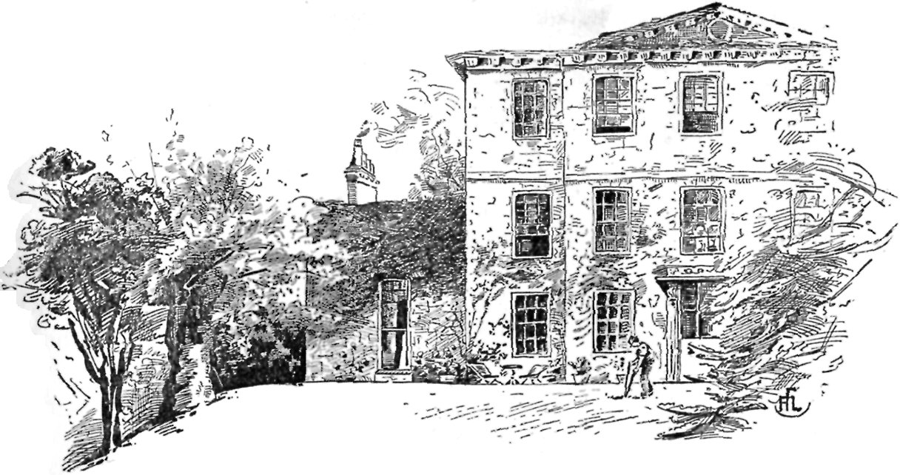
LICHFIELD HOUSE, RICHMOND.
{kind=link}
Armed with that desk and its supply of stationery, Mary Elizabeth Braddon—very fond of writing her name at full-length, and her address also at full-length, though the word "Middlesex" offered difficulties—began that pilgrimage on the broad high road of fiction, which was destined to be a longish one. So much for the little girl of eight years old, in the third person, and now to become strictly autobiographical.
My first story was based on those fairy tales which first opened to me the world of imaginative literature. My first attempt in fiction, and in round-hand, on carefully pencilled double lines, was a story of two sisters, a good sister and a wicked, and I fear adhered more faithfully to the lines of the archetypal story than the writer's pen kept to the double fence which should have ensured neatness.

THE HALL.
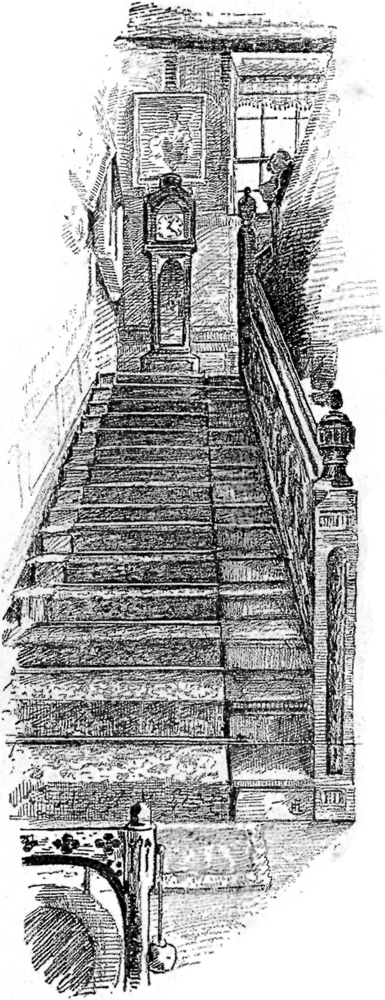
THE STAIRCASE.
{kind=link}
The interval between the ages of eight and twelve was a prolific period, fertile in unfinished MSS., among which I can now trace a historical novel on the Siege of Calais—an Eastern story, suggested by a passionate love of Miss Pardoe's Turkish tales, and Byron's "Bride of Abydos," which my mother, a devoted Byron worshipper, allowed me to read aloud to her—and doubtless murder in the reading—a story of the Hartz Mountains, with audacious flights in German diablerie; and lastly, very seriously undertaken, and very perseveringly worked upon, a domestic story, the outline of which was suggested by the same dear and sympathetic mother.
Now it is a curious fact, which may or may not be common to other story-spinners, that I have never been able to take kindly to a plot—or the suggestion of a plot—offered to me by anybody else. The moment a friend tells me that he or she is desirous of imparting a series of facts—strictly true—as if truth in fiction mattered one jot!—which in his or her opinion would make the ground plan of an admirable, startling, and altogether original three-volume novel, I know in advance that my imagination will never grapple with those startling circumstances—that my thoughts will begin to wander before my friend has got half through the remarkable chain of events, and that if the obliging purveyor of romantic incidents were to examine me at the end of the story, I should be spun ignominiously. For the most part, such subjects as have been proposed to me by friends have been hopelessly unfit for the circulating library; or, where not immoral, have been utterly dull; but it is, I believe, a fixed idea in the novel-reader's mind that any combination of events out of the beaten way of life will make an admirable subject for the novelist's art.
My dear mother, taking into consideration my tender years, and perhaps influenced in somewise by her own love of picking up odd bits of Sheraton or Chippendale furniture in the storehouses of the less ambitious second-hand dealers of those simpler days, offered me the following scenario for a domestic story. It was an incident which, I doubt not, she had often read at the tail of a newspaper column, and which certainly savours of the gigantic gooseberry, the sea-serpent, and the agricultural labourer who unexpectedly inherits half-a-million. It was eminently a Simple Story, and far more worthy of that title than Mrs. Inchbald's long and involved romance.
An honest couple, in humble circumstances, possess among their small household gear a good old easy chair, which has been the pride of a former generation, and is the choicest of their household gods. A comfortable cushioned chair, snug and restful, albeit the chintz covering, though clean and tidy, as virtuous people's furniture always is in fiction, is worn thin by long service, while the dear chair itself is no longer the chair it once was as to legs and framework.
Evil days come upon the praiseworthy couple and their dependent brood, among whom I faintly remember the love interest of the story to have lain; and that direful day arrives when the average landlord of juvenile fiction, whose heart is of adamant and brain of brass, distrains for the rent. The rude broker swoops upon the humble dovecot; a cart or hand-barrow waits on the carefully hearth-stoned door-step for the household gods; the family gather round the cherished chair, on which the rude broker has already laid his grimy fingers; they hang over the back and fondle the padded arms; and the old grandmother, with clasped hands, entreats that, if able to raise the money in a few days, they may be allowed to buy back that loved heirloom.
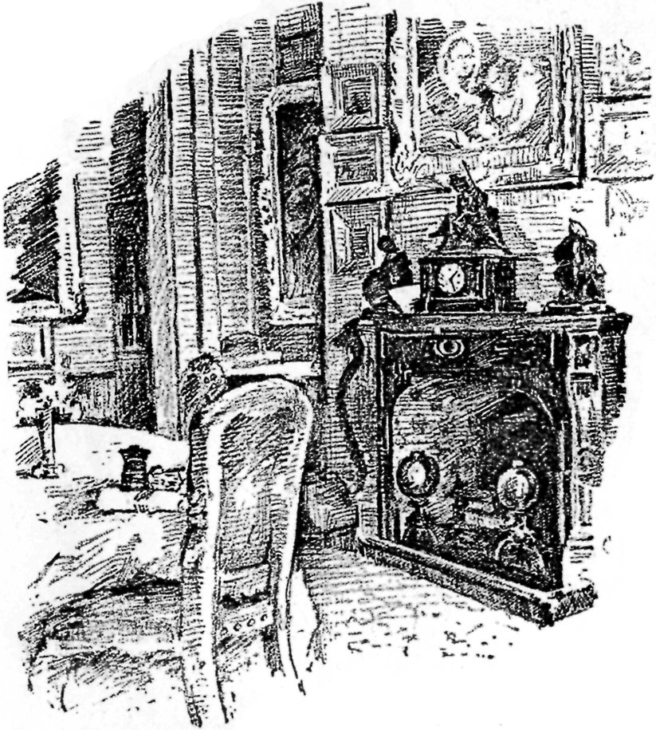
THE DINING ROOM.
{kind=link}
The broker laughs the plea to scorn; they might have their chair, and cheap enough, he had no doubt. The cover was darned and patched—as only the virtuous poor of fiction do darn and do patch—and he made no doubt the stuffing was nothing better than brown wool; and with that coarse taunt the coarser broker dug his clasp-knife into the cushion against which grandfatherly backs had leaned in happier days, and lo! an avalanche of banknotes fell out of the much-maligned horse-hair, and the family was lifted from penury to wealth. Nothing more simple—or more natural. A prudent but eccentric ancestor had chosen this mode of putting by his savings, assured that, whenever discovered, the money would be useful to—somebody.
So ran the scenario: but I fancy my juvenile pen hardly held on to the climax. My brief experience of boarding school occurred at this time, and I well remember writing "The Old Arm Chair" in a penny account book, in the schoolroom of Cresswell Lodge, and that I was both surprised and offended at the laughter of the kindly music-teacher who, coming into the room to summon a pupil, and seeing me gravely occupied, enquired what I was doing, and was intensely amused at my stolid method of composition, plodding on undisturbed by the voices and occupations of the older girls around me. "The Old Arm Chair" was certainly my first serious, painstaking effort in fiction; but as it was abandoned unfinished before my eleventh birthday, and as no line thereof ever achieved the distinction of type, it can hardly rank as my first novel.
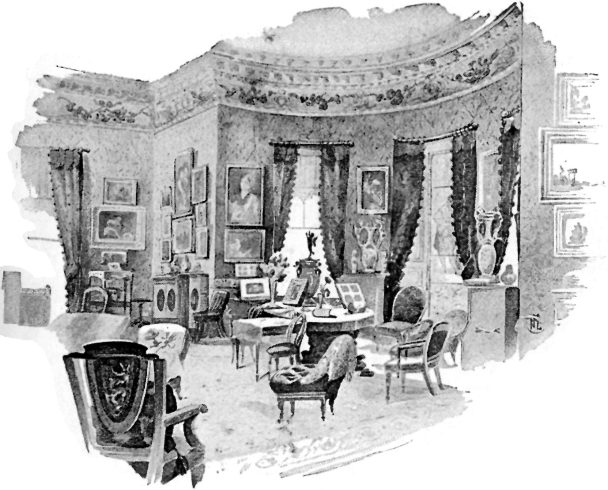
THE DRAWING-ROOM.
{kind=link}
There came a very few years later the sentimental period, in which my unfinished novels assumed a more ambitious form, and were modelled chiefly upon Jane Eyre, with occasional tentative imitations of Thackeray. Stories of gentle hearts that loved in vain, always ending in renunciation. One romance there was, I well remember, begun with resolute purpose, after the first reading of Esmond, and in the endeavour to give life and local colour to a story of the Restoration period, a brilliantly wicked interval in the social history of England, which, after the lapse of thirty years, I am still as bent upon taking for the background of a love story as I was when I began "Master Anthony's Record" in Esmondese, and made my girlish acquaintance with the Reading-room of the British Museum, where I went in quest of local colour, and where much kindness was shown to my youth and inexperience of the book world. Poring over a folio edition of the State Trials at my uncle's quiet rectory in sleepy Sandwich, I had discovered the passionate romantic story of Lord Grey's elopement with his sister-in-law, next in sequence to the trial of Lawrence Braddon and Hugh Speke for conspiracy. At the risk of seeming disloyal to my own race, I must add that it seemed to me a very tinpot order of plot to which these two learned gentlemen bent their legal minds, and which cost the Braddon family a heavy fine in land near Camelford—confiscation which I have heard my father complain of as especially unfair—Lawrence being a younger son. The romantic story of Lord Grey was to be the subject of "Master Anthony's Record," but Master Anthony's sentimental autobiography went the way of all my earlier efforts. It was but a year or so after the collapse of Master Anthony, that a blindly-enterprising printer of Beverley, who had seen my poor little verses in the Beverley Recorder, made me the spirited offer of ten pounds for a serial story, to be set up and printed at Beverley, and published on commission by a London firm in Warwick Lane. I cannot picture to myself, in my after-knowledge of the bookselling trade, any enterprise more futile in its inception or more feeble in its execution; but to my youthful ambition the actual commission to write a novel, with an advance payment of fifty shillings to show good faith on the part of my Yorkshire speculator, seemed like the opening of that pen-and-ink paradise which I had sighed for ever since I could hold a pen. I had, previously to this date, found a Mæcenas in Beverley, in the person of a learned gentleman who volunteered to foster my love of the Muses by buying the copyright of a volume of poems and publishing the same at his own expense—which he did, poor man, without stint, and by which noble patronage of Poet's Corner verse, he must have lost money. He had, however, the privilege of dictating the subject of the principal poem, which was to sing—however feebly—Garibaldi's Sicilian campaign.
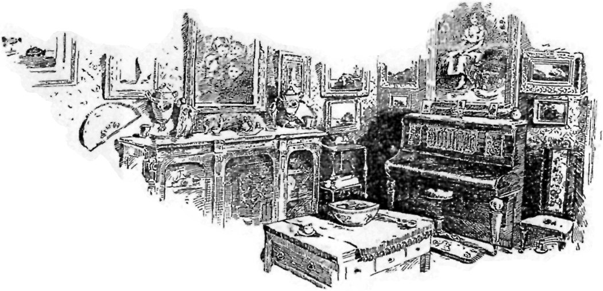
THE EVENING ROOM.
{kind=link}
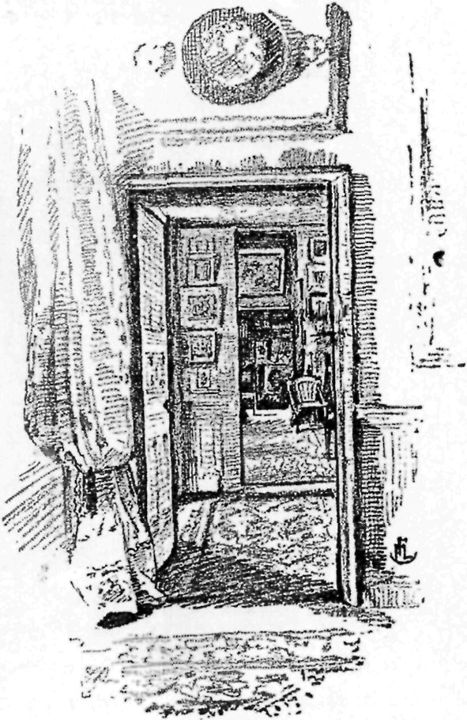
THE SMOKING-ROOM.
{kind=link}
The Beverley printer suggested that my Warwick Lane serial should combine, as far as my powers allowed, the human interest and genial humour of Dickens with the plot-weaving of G. W. R. Reynolds; and, furnished with these broad instructions, I filled my ink bottle, spread out my foolscap, and, on a hopelessly wet afternoon, began my first novel—now known as "The Trail of the Serpent"—but published in Warwick Lane, and later in the stirring High Street of Beverley, as "Three Times Dead." In "Three Times Dead" I gave loose to all my leanings to the violent in melodrama. Death stalked in ghastliest form across my pages; and villainy reigned triumphant till the Nemesis of the last chapter. I wrote with all the freedom of one who feared not the face of a critic; and, indeed, thanks to the obscurity of its original production, and its re-issue as the ordinary two-shilling railway novel, this first novel of mine has almost entirely escaped the critical lash, and has pursued its way as a chartered libertine. People buy it and read it, and its faults and follies are forgiven as the exuberances of a pen unchastened by experience; but faster and more facile at that initial stage than it ever became after long practice.
I dashed headlong at my work, conjured up my images of horror or of mirth, and boldly built the framework of my story, and set my puppets moving. To me, at least, they were living creatures, who seemed to follow impulses of their own, to be impelled by their own passions, to love and hate, and plot and scheme of their own accord. There was unalloyed pleasure in the composition of that first story, and the knowledge that it was to be actually printed and published, and not to be declined with thanks by adamantine magazine editors, like a certain short story which I had lately written, and which contained the germ of "Lady Audley's Secret." Indeed, at this period of my life, the postman's knock had become associated in my mind with the sharp sound of a rejected MS. dropping through the open letter-box on to the floor of the hall, while my heart seemed to drop in sympathy with that book-post packet.
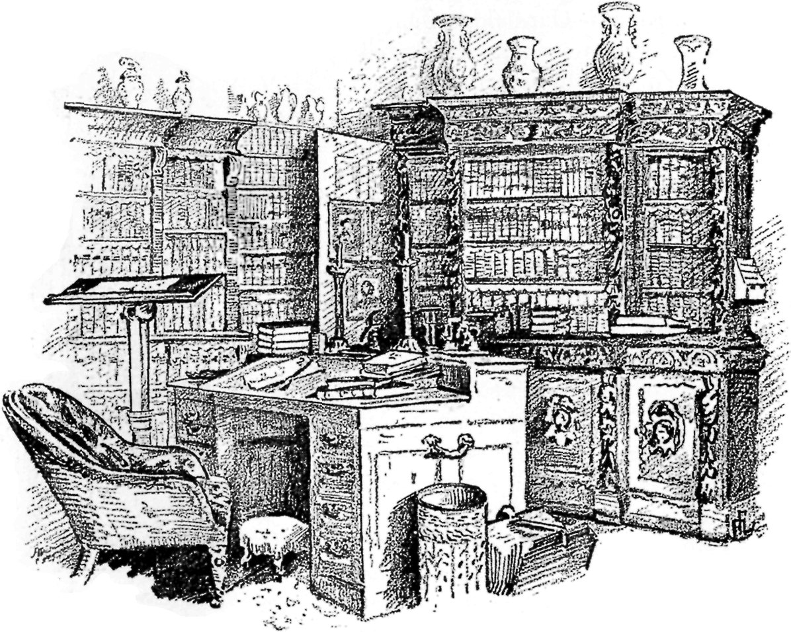
THE LIBRARY.
{kind=link}
Short of never being printed at all, my Beverley-born novel could have hardly entered upon the world of books in a more profound obscurity. That one living creature ever bought a number of "Three Times Dead" I greatly doubt. I can recall the thrill of emotion with which I tore open the envelope that contained my complimentary copy of the first number, folded across, and in aspect inferior to a gratis pamphlet about a patent medicine. The miserable little wood block which illustrated that first number would have disgraced a baker's whitey-brown bag, would have been unworthy to illustrate a penny bun. My spirits were certainly dashed at the technical shortcomings of that first serial, and I was hardly surprised when I was informed a few weeks later, that although my admirers at Beverley were deeply interested in the story, it was not a financial success, and that it would be only obliging on my part, and in accordance with my known kindness of heart, if I were to restrict the development of the romance to half its intended length, and to accept five pounds in lieu of ten as my reward. Having no desire that the rash Beverley printer should squander his own or his children's fortune in the obscurity of Warwick Lane, I immediately acceded to his request, shortened sail, and went on with my story, perhaps with a shade less enthusiasm, having seen the shabby figure it was to make in the book world. I may add that the Beverley publisher's payments began and ended with his noble advance of fifty shillings. The balance was never paid; and it was rather hard lines that, on his becoming bankrupt in his poor little way a few years later, a judge in the Bankruptcy Court remarked that, as Miss Braddon was now making a good deal of money by her pen, she ought to "come to the relief" of her first publisher.
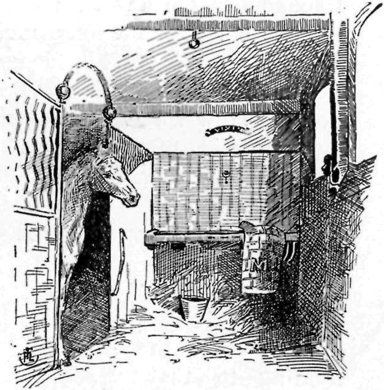
MISS BRADDON'S FAVOURITE MARE.
{kind=link}
And now my volume of verses being well under weigh, I went with my mother to farm-house lodgings in the neighbourhood of that very Beverley, where I spent, perhaps, the happiest half-year of my life—half a year of tranquil, studious days, far from the madding crowd, with the mother whose society was always all sufficient for me—half a year among level pastures, with unlimited books from the library in Hull, an old farm-horse to ride about the green lanes, the breath of summer, with all its sweet odours of flower and herb, around and about us: half a year of unalloyed bliss, had it not been for one dark shadow, the heroic figure of Garibaldi, the sailor soldier, looming large upon the foreground of my literary labours, as the hero of a lengthy narrative poem in the Spenserian metre.
My chief business at Beverley was to complete the volume of verse commissioned by my Yorkshire Mæcenas, at that time a very rich man, who paid me a much better price for my literary work than his townsman, the enterprising printer, and who had the first claim on my thought and time.
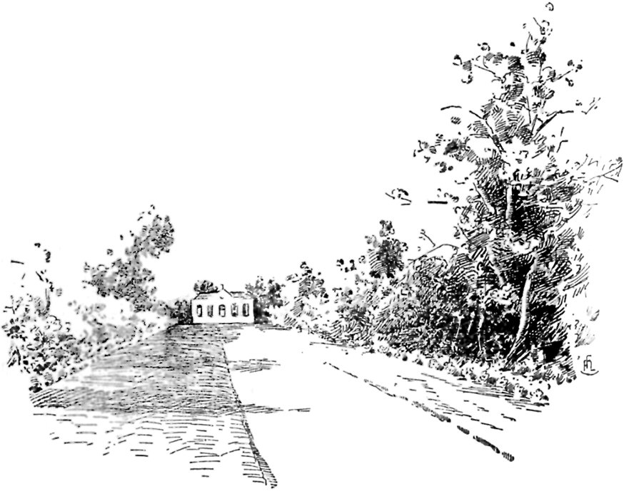
THE ORANGERY.
{kind=link}
With the business-like punctuality of a salaried clerk, I went every morning to my file of the Times, and pored and puzzled over Neapolitan revolution and Sicilian campaign, and I can only say that if Emile Zola has suffered as much over Sedan as I suffered in the freshness of my youth, when flowery meadows and the old chestnut mare invited to summer idlesse, over the fighting in Sicily, his dogged perseverance in uncongenial labour should place him among the Immortal Forty. How I hated the great Joseph G. and the Spenserian metre, with its exacting demands upon the rhyming faculty. How I hated my own ignorance of modern Italian history, and my own eyes for never having looked upon Italian landscape, whereby historical allusion and local colour were both wanting to that dry-as-dust record of heroic endeavour. I had only the Times correspondent; where he was picturesque I could be picturesque—allowing always for the Spenserian straining—where he was rich in local colour I did my utmost to reproduce his colouring, stretched always on the Spenserian rack, and lengthened out by the bitter necessity of finding triple rhymes. Next to Guiseppe Garibaldi I hated Edmund Spenser, and it may be from a vengeful remembrance of those early struggles with a difficult form of versification, that, although throughout my literary life I have been a lover of England's earlier poet, and have delighted in the quaintness and naïveté of Chaucer, I have refrained from reading more than a casual stanza or two of the "Faëry Queen." When I lived at Beverley, Spenser was to me but a name, and Byron's "Childe Harold" was my only model for that exacting verse. I should add that the Beverley Mæcenas, when commissioning this volume of verse, was less superb in his ideas than the literary patron of the past. He looked at the matter from a purely commercial standpoint, and believed that a volume of verse, such as I could produce, would pay—a delusion on his part which I honestly strove to combat before accepting his handsome offer of remuneration for my time and labour. It was with this idea in his mind that he chose and insisted upon the Sicilian Campaign as a subject for my muse, and thus started me heavily handicapped on the racecourse of Parnassus.
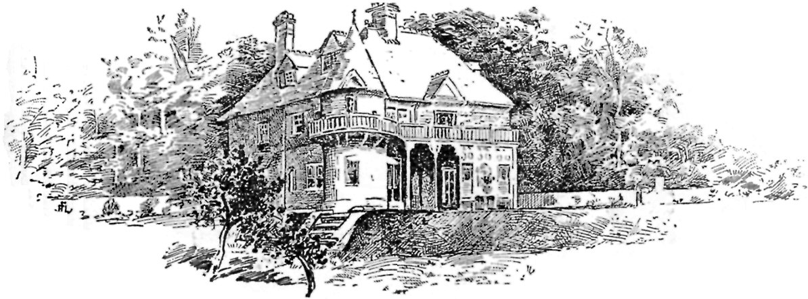
MISS BRADDON'S COTTAGE AT LYNDHURST.
{kind=link}
The weekly number of "Three Times Dead" was "thrown off" in brief intervals of rest from my magnum opus, and it was an infinite relief to turn from Garibaldi and his brothers in arms to the angels and the monsters which my own brain had engendered, and which to me seemed more alive than the good great man whose arms I so laboriously sang. My rustic pipe far better loved to sing of melodramatic poisoners and ubiquitous detectives; of fine houses in the West of London, and dark dens in the East. So the weekly chapter of my first novel ran merrily off my pen while the printer's boy waited in the farm-house kitchen.
Happy, happy days, so near to memory, and yet so far. In that peaceful summer I finished my first novel, knocked Garibaldi on the head with a closing rhapsody, saw the York spring and summer races in hopelessly wet weather, learnt to love the Yorkshire people, and left Yorkshire almost broken-heartedly on a dull gray October morning, to travel Londonwards through a landscape that was mostly under water.
And, behold, since that October morning I have written fifty-three novels; I have lost dear old friends and found new friends, who are also dear, but I have never looked on a Yorkshire landscape since I turned my reluctant eyes from those level meadows and green lanes where the old chestnut mare used to carry me ploddingly to and fro between tall, tangled hedges of eglantine and honeysuckle.
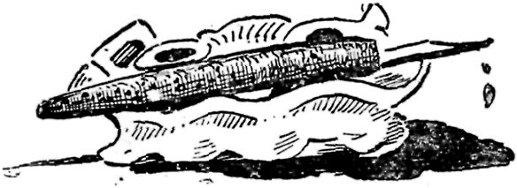
MISS BRADDON'S INKSTAND.
{kind=link}